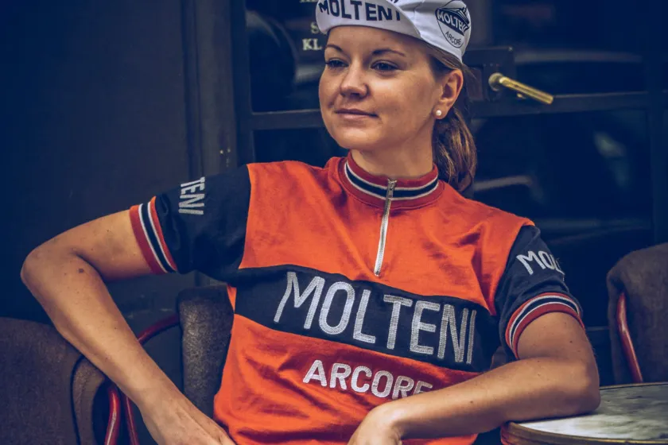
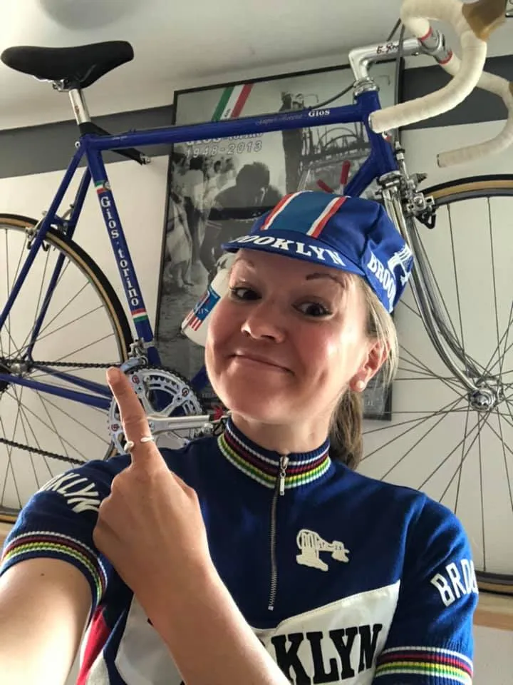

B R E A K I N G: Trine Schmidt skifter fra Molteni til Brooklyn

Tema – Lockdown: Tidligere EM-guldvinder og VM-sølvvinder, Trine Schmidt, skifter fra Squadra Molteni til Brooklyn. Læs reportagen om det tragiske skifte …
Det er onsdag aften 15. april. Kaptajn Bjørnsteens er netop kommet hjem fra et kort 25 x Kiddesvej træningspas. På Squadra Moltenis tele-fax er der indløbet en besked. Det er fra Trine Schmidt:
Kære Niels og Squadra Molteni
Da UCI nu varsler, at alle løb i år stort set skal ligge i september – november, og da OL nu er rykket til 2021 – og da jeg fra den københavnske Pudse Cosa Nostra har fået et tilbud, som jeg ikke kunne sige nej til, må jeg hermed meddele, at jeg opsiger min kontrakt med Squadra Molteni.
Transferbeløb og erstatning for uretsmæssig opsigelse af kontrakt vil blive udbetalt af Advokatfirmaet Marker v/Thomas Marker.Kh Trine
Et kort øjeblik overvejer Kaptajnen at tage en ordenlig slurk og sin drikkedunk, der stadig er halv fyldt efter de hårde intervaller på Kiddesvej. Men nej, der skal noget stærkere til. Han skænker sig et stort glas Porto Molteni.
– Det kom godt nok som et chock, lyder det fra Kaptajn Bjørnsteen – mens han instinktivt sætter Danseorkestret fra 1985 på pladespilleren:
♪♫♫….”Det kom som et chok, da hun forlod mig
Den nat hun blev væk, den dag hun sendte brevet til mig
I brevet der stod, hmm, at hun var blevet træt af mig
Træt af at vente og hele tiden skændes med mig”… ♪♫♫

Kaptajnen sætter sig i sin lænestol. Ser tomt ud i luften. Rækker ud efter fastnettelefonen og drejer nummeret til Mentor Per Sandahl:

– Hallo, det er Per.
– Det er Kaptajnen her. Hun har forladt os!
– Hvem? Maria? Hvem skal så bage kage til os…?
– Nej, Trine. Trine Schmidt.
– Nå, for pokker. Av, det var ikke så godt.
– Ja, det er forfærdeligt… Hvordan kommer vi over det?
– Hmmm, altså … Romeo kom sig jo over dét med Julie. Og Sixten Sparre kom sig jo over dét med Elvira Madigan. Så mon ikke også du komme dig over, at Trine har forladt os.
Kaptajnen overvejer, om han skal fortælle Sandahl lidt om slutningerne på de to klassiske tragedier, men dropper det. Det må blive en anden gang…
– Du har ret Per. Det er den slags brud der gør ondt. Helt ind i hjertet. Men vi kommer over det. Tak for det gode råd Per.
Mens Kaptajnen senere den onsdag aften er ved at tænde op i Pizzaria Moltenis udendørs pizzaovn, kan han ikke lade være med at tænke over, hvad der mon gik galt?
Var det mon fordi Grane Mååløe ikke fik bygget det separate omklædningsrum til Trine i holdbussen? Var det mon fordi, at Trine ikke er med på holdet til etapeløbet Berlin-Vejle? Eller var det mon fordi, at Trine ikke var udtaget til Ronde van Borum – løbet der ikke blev kørt, men som squadra Molteni vandt suverænt?
Vi får det sikkert aldrig af vide…
Første pizza i den 300 grader varme bøgebrændefyret ovn er klar. En klassisk stærkt kryddret Salame di Felino ligger i den boblende bøffelmozzarella.
I øjeblik føles tabet af Trine pludselig ikke så stort… 
Vi ønsker Trine Schmidt god vind fremover <3

Vi ønsker den københavnske Pudse Cosa Nostra (Thomas Marker, Callegulv Henrik carlquist og Evan Jakobsen, red.) tillykke. Pas godt på hende.